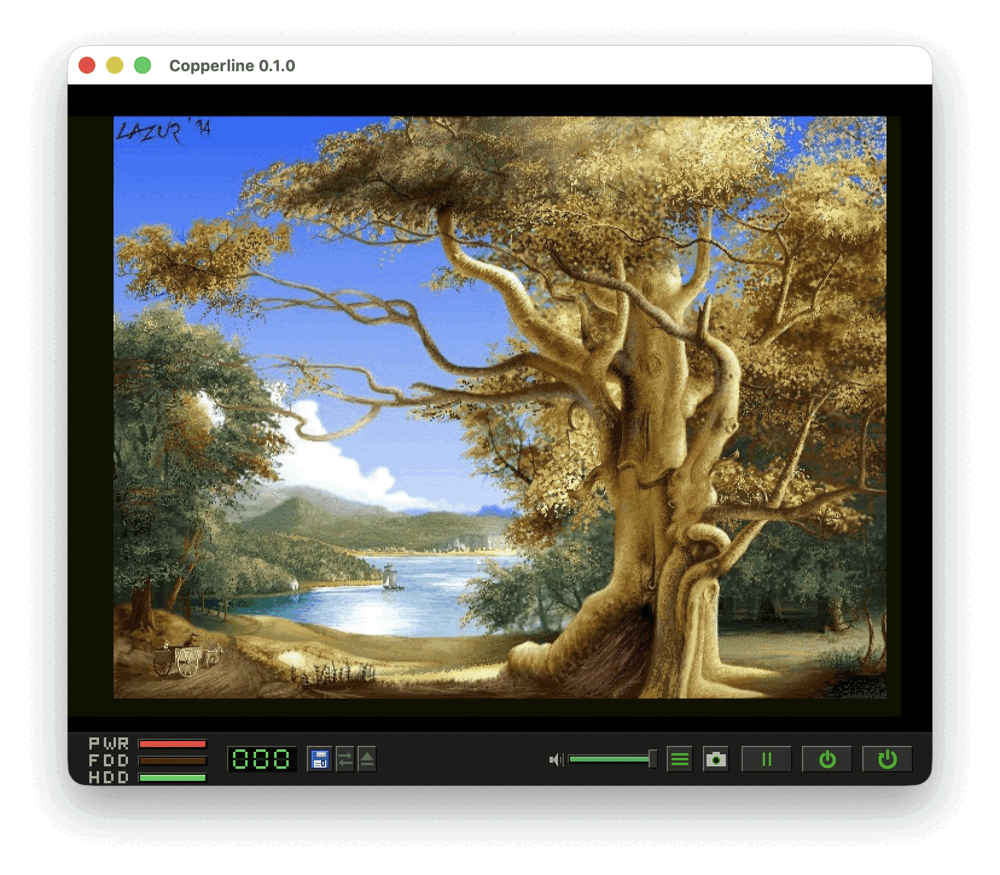
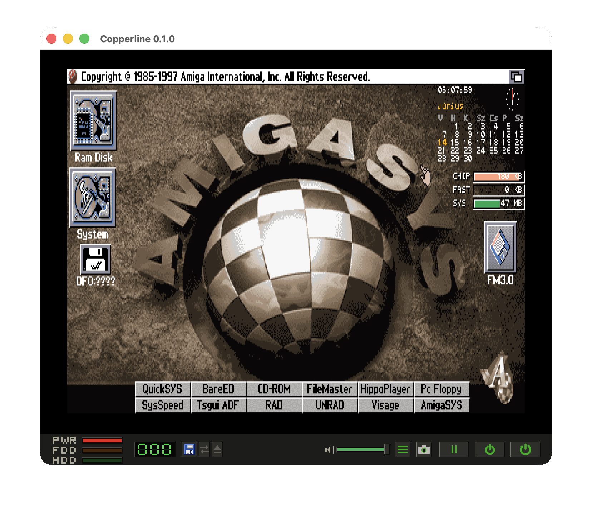
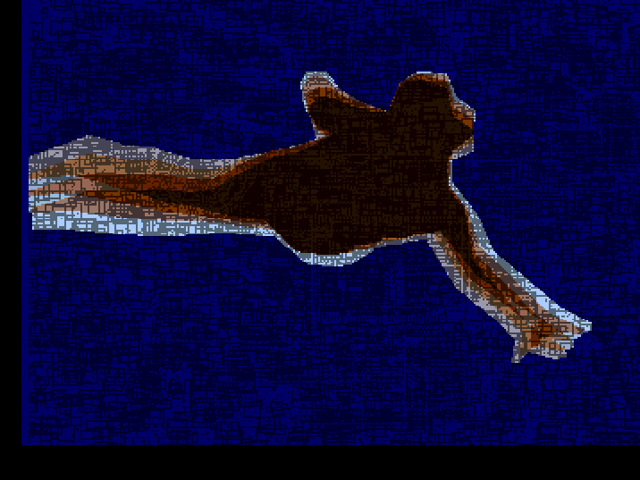

Cycle-driven chip bus
The chip bus is arbitrated per colour clock between refresh, display, sprite, disk and audio DMA, the Copper, the blitter and the CPU - with hardware per-word bus sequences and modelled 68000 interrupt-recognition latency.
Cycle-driven · OCS / ECS / AGA · written in Rust
An Amiga emulator that models the hardware, not individual titles. The chip bus is arbitrated per colour clock; the Copper and blitter are scheduled per DMA slot; 68000 interrupt latency is modelled. Timing-sensitive demos and games run at real speed.
Compatibility problems are fixed by modelling the 68000, Agnus, Denise, Paula, CIA, floppy and timing - never by branching on a title's name.
The chip bus is arbitrated per colour clock between refresh, display, sprite, disk and audio DMA, the Copper, the blitter and the CPU - with hardware per-word bus sequences and modelled 68000 interrupt-recognition latency.
Independent Agnus / Denise revisions and machine profiles from the A500 to the A1200, plus CDTV and CD32. Boots Kickstart 1.3 / 2.05 / 3.1 and DiagROM, and runs the timing-sensitive regression set at real speed.
Selectable 68000 / 68EC020 / 68020 / 68030 / 68040 and clock, accurate 68000 cycle counts, optional on-chip caches, and a 68881 / 68882 FPU (default-on for the 040).
A bit-timed keyboard (6500/1 MCU), mouse, USB gamepad (pure-Rust gilrs, no SDL2), 4-channel Paula audio, floppy (ADF / ADZ / DMS / SCP), Gayle IDE, A2091 SCSI, and CDTV / CD32 CD.
8 bitplanes, a 256-entry 25-bit palette, HAM8, FMODE wide fetch, dual playfield, EHB, sprites and hardware collisions - replayed by beam position so the renderer never races the chipset.
An in-window debugger, deterministic save states, input recording / replay, and headless screenshot & frame-dump capture. Every replay is byte-identical.
Real captures from the emulator window - chrome, status bar and all.



From the 68000 prefetch queue to Paula's audio mixer - the timing model is documented next to the code and backed by named regression tests.
A vendored pure-Rust m68k core drives the CPU. The detailed architecture and timing model live in the internals docs.
Grab the latest release, or build from source with a stable Rust toolchain. Developed and tested on macOS, with a Linux AppImage and a Windows build available.
Download the latest release# tap the repository and install the latest release
brew tap LinuxJedi/copperline https://github.com/LinuxJedi/Copperline
brew install copperline
# or build the latest development version from main
brew install --HEAD copperline# grab the .AppImage from the latest release, then make it executable
chmod +x Copperline-0.2.0-x86_64.AppImage
# run with a Kickstart ROM, or a config file
./Copperline-0.2.0-x86_64.AppImage path/to/kickstart.rom
./Copperline-0.2.0-x86_64.AppImage --config copperline.toml# with Homebrew on Linux, tap the repository and install
brew tap LinuxJedi/copperline https://github.com/LinuxJedi/Copperline
brew install copperline
# or build the latest development version from main
brew install --HEAD copperline# download and extract Copperline-0.2.0-win-x64.zip, then from a terminal
copperline.exe path\to\kickstart.rom
copperline.exe --config copperline.toml# clone and build (release - debug is too slow for real-time)
git clone https://github.com/LinuxJedi/Copperline.git
cd Copperline
cargo build --release
# run with a Kickstart ROM, or a config file
./target/release/copperline path/to/kickstart.rom
./target/release/copperline --config copperline.tomlRequires Rust 1.87+ (stable). No SDL2 dependency.